一开始没认真打，签到题一直WA。。。dpq我再也不这样了QAQ，总体来说这次题比较简单吧（虽然我出的题也不多），有兴趣的可以做做试试~ 链接戳我
A 考试周破防（if判断，签到）
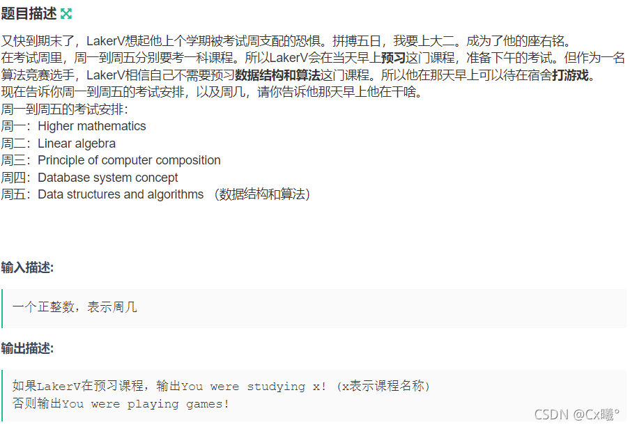
废话可跳过：真破防了，是的没错，就这个题我WA了三发。。。没救了
思路 ：
我直接上AC代码：
1 2 3 4 5 6 7 8 9 10 11 12 13 14 15 16 17 18 19 20 21 22 23 24 25 26 27 28 29 30 31 32 33 34 35 36 37 38 39 #include <iostream> #include <cstdio> #include <algorithm> #include <stack> #include <vector> #include <map> #include <queue> #include <cstring> #include <cmath> #include <set> #include <iterator> #include <numeric> using namespace std; typedef long long ll;#define ios ios::sync_with_stdio(false);cin.tie(0);cout.tie(0); #define INF 0x3f3f3f3f const int mod=1e9 +7 ;int n; int main () cin>>n; if (n==1 ) cout<<"You were studying Higher mathematics!" <<'\n' ; else if (n==2 ) cout<<"You were studying Linear algebra!" <<'\n' ; else if (n==3 ) cout<<"You were studying Principle of computer composition!" <<'\n' ; else if (n==4 ) cout<<"You were studying Database system concept!" <<'\n' ; else if (n==5 ) cout<<"You were playing games!" <<'\n' ; return 0 ; }
B 咖啡店（贪心）
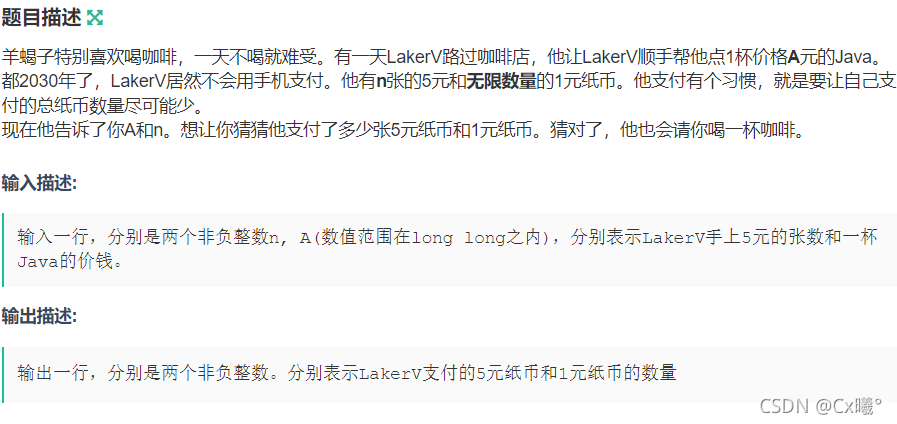
思路 ： 小小的贪心题~先算5元用几张，分情况讨论即可
AC代码：
1 2 3 4 5 6 7 8 9 10 11 12 13 14 15 16 17 18 19 20 21 22 23 24 25 26 27 28 29 30 31 32 33 #include <iostream> #include <cstdio> #include <algorithm> #include <stack> #include <vector> #include <map> #include <queue> #include <cstring> #include <cmath> #include <set> #include <iterator> #include <numeric> using namespace std; typedef long long ll;#define ios ios::sync_with_stdio(false);cin.tie(0);cout.tie(0); #define INF 0x3f3f3f3f const int mod=1e9 +7 ;ll n,a; int main () cin>>n>>a; if (a>=n*5 ) cout<<n<<' ' <<a-n*5 <<'\n' ; else if (a<n*5 ) cout<<a/5 <<' ' <<a-a/5 *5 <<'\n' ; return 0 ; }
C kiki和bob玩取石子（规律，博弈）
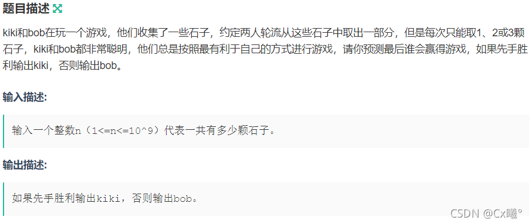
废话可跳过：一开始在纠结这个游戏怎么算胜利，，，看来是谁最后取走所有石子谁胜利（不过我确实觉得题里应该说一下）
思路 ：（1）我的思路：（不一定合理） 我们发现可取的石子数量为1,2,3, 1+3=4,2+2=4，那么4一定很特殊。我们这样考虑，因为每个人都按照最有利于自己的方式取，如果每取一轮两人石子数量等于4，且最后剩余石子数等于4，那一定是bob取到最后的石子胜利，即石子数是4的倍数则是bob胜利。其他情况则总有可能kiki胜利。
（2）题解思路：当石子数为 1、2、3 时，全部拿走取胜，
AC代码：
1 2 3 4 5 6 7 8 9 10 11 12 13 14 15 16 17 18 19 20 21 22 23 24 25 26 27 28 29 30 31 32 33 #include <iostream> #include <cstdio> #include <algorithm> #include <stack> #include <vector> #include <map> #include <queue> #include <cstring> #include <cmath> #include <set> #include <iterator> #include <numeric> using namespace std; typedef long long ll;#define ios ios::sync_with_stdio(false);cin.tie(0);cout.tie(0); #define INF 0x3f3f3f3f const int mod=1e9 +7 ;ll n; int main () cin>>n; if (n%4 ==0 ) cout<<"bob" <<'\n' ; else cout<<"kiki" <<'\n' ; return 0 ; }
D 猴王kiki分桃（循环，判断）
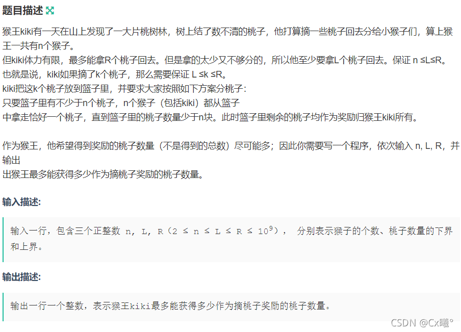
废话可跳过：题目很容易，但是一到比赛就容易想复杂了，，，一开始想到是不是最大值总是猴子数-1？但很快发现并不是。
思路 ： 即求算所摘桃数取猴子数余的最大值，两种方法：
（1）循环判断：
AC代码：
1 2 3 4 5 6 7 8 9 10 11 12 13 14 15 16 17 18 19 20 21 22 23 24 25 26 27 28 29 30 31 32 33 34 35 36 37 38 39 40 41 #include <iostream> #include <cstdio> #include <algorithm> #include <stack> #include <vector> #include <map> #include <queue> #include <cstring> #include <cmath> #include <set> #include <iterator> #include <numeric> using namespace std; typedef long long ll;#define ios ios::sync_with_stdio(false);cin.tie(0);cout.tie(0); #define INF 0x3f3f3f3f const int mod=1e9 +7 ;ll n,l,r; ll ans; ll answer (ll a,ll b) ll t=a-a/b*b; return t; } int main () cin>>n>>l>>r; for (int i=l;i<=r;i++) { ans=max (ans,answer (i,n)); } cout<<ans<<'\n' ; return 0 ; }
（2）直接判断：
AC代码：
1 2 3 4 5 6 7 8 9 10 11 12 13 14 15 16 17 18 19 20 21 22 23 24 25 26 27 28 29 30 31 32 33 #include <iostream> #include <cstdio> #include <algorithm> #include <stack> #include <vector> #include <map> #include <queue> #include <cstring> #include <cmath> #include <set> #include <iterator> #include <numeric> using namespace std;typedef long long ll;#define ios ios::sync_with_stdio(false);cin.tie(0);cout.tie(0); #define INF 0x3f3f3f3f const int mod=1e9 +7 ;int n,l,r;int main () cin>>n>>l>>r; if (l/n==r/n) cout<<r%n<<'\n' ; else cout<<n-1 <<'\n' ; return 0 ; }
E 很二的拆分（二进制）
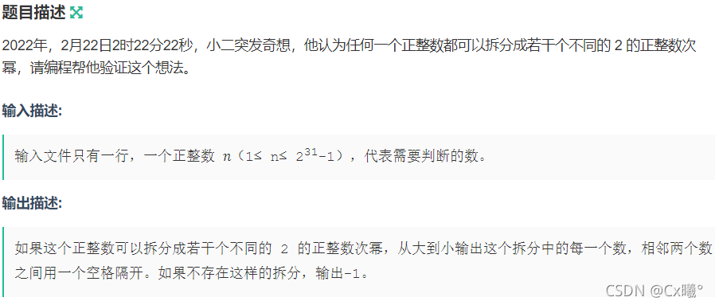
思路 ：
（1）题解思路：对于奇数，因为2的次幂一定都是偶数，偶数之和一定为偶数，直接输出-1；对于偶数，转化为二进制，按位运算输出（对位运算还没学明白的我很不友好QAQ）
AC代码：
1 2 3 4 5 6 7 8 9 10 11 12 13 14 15 16 17 18 19 20 21 22 23 24 25 26 27 28 29 30 31 32 33 34 35 36 37 38 39 40 41 42 43 44 45 #include <iostream> #include <cstdio> #include <algorithm> #include <stack> #include <vector> #include <map> #include <queue> #include <cstring> #include <cmath> #include <set> #include <iterator> #include <numeric> using namespace std;typedef long long ll;#define ios ios::sync_with_stdio(false);cin.tie(0);cout.tie(0); #define INF 0x3f3f3f3f const int mod=1e9 +7 ;int n; int main () cin>>n; if (n%2 ) cout<<"-1" <<'\n' ; else { int x=0 ; for (int i=31 ;i>=1 ;i--) { if (n&(1 <<i)&&x==0 ) { cout<<(1 <<i); x=1 ; } else if (n&(1 <<i)) cout<<' ' <<(1 <<i); } } return 0 ; }
（2）我的思路：快速幂计算2的30次幂，倒序输出
AC代码：
1 2 3 4 5 6 7 8 9 10 11 12 13 14 15 16 17 18 19 20 21 22 23 24 25 26 27 28 29 30 31 32 33 34 35 36 37 38 39 40 41 42 43 44 45 46 47 48 49 50 51 52 53 54 55 56 57 58 59 60 61 62 63 64 65 66 67 68 69 70 71 72 73 74 75 76 77 78 #include <iostream> #include <cstdio> #include <algorithm> #include <stack> #include <vector> #include <map> #include <queue> #include <cstring> #include <cmath> #include <set> #include <iterator> #include <numeric> using namespace std; typedef long long ll;#define ios ios::sync_with_stdio(false);cin.tie(0);cout.tie(0); #define INF 0x3f3f3f3f const int mod=1e9 +7 ;ll n,o; ll p[30 ],d[30 ]; int cnt;int j; ll pmod (ll a,ll b) ll res=1 ; while (b) { if (b%2 ) res=res*a; b/=2 ; a=a*a; } return res; } int main () cin>>n; o=n; for (int i=1 ;i<=32 ;i++) { p[i]=pmod (2 ,i); } if (n%2 ) cout<<"-1" <<'\n' ; else { cnt=0 ; for (int i=32 ;i>=1 ;i--) { if (o==0 ) break ; if (p[i]<=o) { o-=p[i]; d[++cnt]=p[i]; } } } int x=0 ; for (int i=1 ;i<=cnt;i++) { if (x==0 ) { cout<<d[i]; x=1 ; } else cout<<' ' <<d[i]; } cout<<'\n' ; return 0 ; }
F 构造字符串（字符串模拟，贪心）
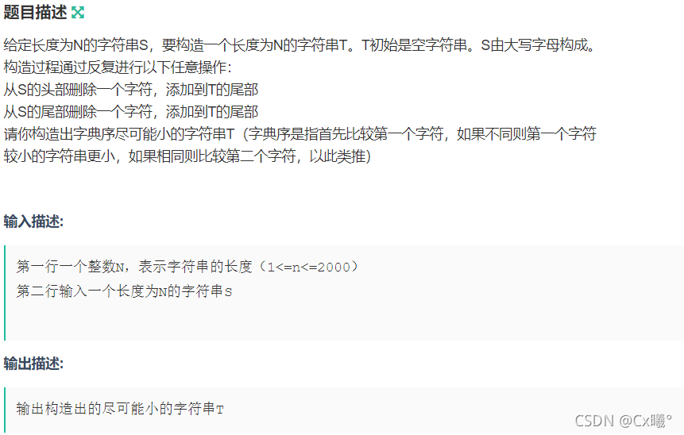
废话可跳过：不会实现这样头取一个尾取一个。。。之前cf上也有类似的题。。。学习了
思路 ：由字典序的性质来看，我们希望尽早使用更小的字符，所以可以如下贪心：
AC代码：
1 2 3 4 5 6 7 8 9 10 11 12 13 14 15 16 17 18 19 20 21 22 23 24 25 26 27 28 29 30 31 32 33 34 35 36 37 38 39 40 41 42 43 44 45 46 47 48 49 50 51 52 53 #include <iostream> #include <cstdio> #include <algorithm> #include <stack> #include <vector> #include <map> #include <queue> #include <cstring> #include <cmath> #include <set> #include <iterator> #include <numeric> using namespace std;typedef long long ll;#define ios ios::sync_with_stdio(false);cin.tie(0);cout.tie(0); #define INF 0x3f3f3f3f const int mod=1e9 +7 ;int n;string s; int main () cin>>n; cin>>s; int a=0 ,b=n-1 ; while (a<=b) { bool left=false ; for (int i=0 ;i+a<=b;i++) { if (s[a+i]<s[b-i]) { left=true ; break ; } else if (s[a+i]>s[b-i]) { left=false ; break ; } } if (left) putchar (s[a++]); else putchar (s[b--]); } return 0 ; }
G 信号之旅（思维,坑）
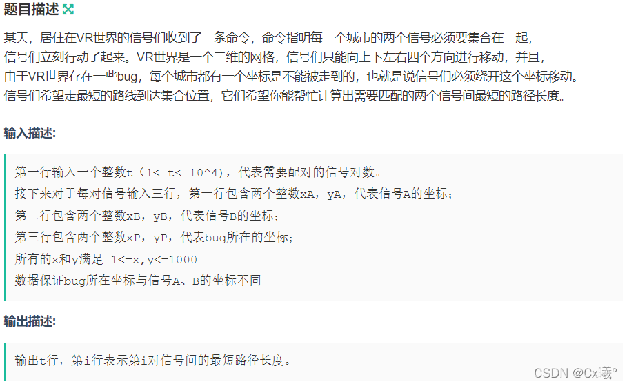
废话可跳过：一开始用bfs，结果发现数据范围太大必TLE，然后好像可以直接判断的。。。想清楚再写，不要浪费不必要的时间
思路 ：分情况讨论
AC代码：
1 2 3 4 5 6 7 8 9 10 11 12 13 14 15 16 17 18 19 20 21 22 23 24 25 26 27 28 29 30 31 32 33 34 35 36 37 38 39 40 41 42 43 44 45 46 47 48 49 50 51 52 53 #include <iostream> #include <cstdio> #include <algorithm> #include <stack> #include <vector> #include <map> #include <queue> #include <cstring> #include <cmath> #include <set> #include <iterator> #include <numeric> using namespace std; typedef long long ll;#define ios ios::sync_with_stdio(false);cin.tie(0);cout.tie(0); #define INF 0x3f3f3f3f const int mod=1e9 +7 ;int x3,y3,x2,y2;int t,a,b; int main () cin>>t; while (t--) { cin>>x3>>y3; cin>>x2>>y2; cin>>a>>b; if (a==x3&&a==x2) { if (b<max (y3,y2)&&b>min (y3,y2)) cout<<abs (y3-y2)+2 <<'\n' ; else cout<<abs (y3-y2)<<'\n' ; } else if (b==y3&&b==y2) { if (a<max (x3,x2)&&a>min (x3,x2)) cout<<abs (x3-x2)+2 <<'\n' ; else cout<<abs (x3-x2)<<'\n' ; } else cout<<abs (x3-x2)+abs (y3-y2)<<'\n' ; } return 0 ; }
H 小球滚动（思维）
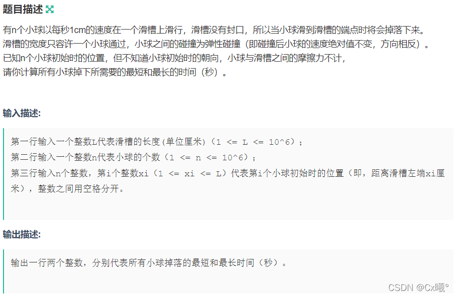
废话可跳过：一开始以为又要做物理题了，弹性碰撞，，赛后听同学讨论发现并不是，没那么麻烦，唉思维这个问题还需锻炼啊
思路 ： 由于小球之间没有区别，所以可以将小球相遇后返回当作是保持原样交叉通过。
AC代码：
1 2 3 4 5 6 7 8 9 10 11 12 13 14 15 16 17 18 19 20 21 22 23 24 25 26 27 28 29 30 31 32 33 34 35 36 37 38 39 40 41 #include <iostream> #include <cstdio> #include <algorithm> #include <stack> #include <vector> #include <map> #include <queue> #include <cstring> #include <cmath> #include <set> #include <iterator> #include <numeric> using namespace std;typedef long long ll;#define ios ios::sync_with_stdio(false);cin.tie(0);cout.tie(0); #define INF 0x3f3f3f3f const int mod=1e9 +7 ;const int N=1e6 +5 ;int l,n;int a[N]; int main () cin>>l; cin>>n; int maxn=-1 ; int minn=0 ; for (int i=1 ;i<=n;i++) { cin>>a[i]; maxn=max (maxn,max (a[i],l-a[i])); minn=max (minn,min (a[i],l-a[i])); } cout<<minn<<' ' <<maxn<<'\n' ; return 0 ; }
ps：注意最短时间，不是都使用min函数！
I kiki看球赛（审题！）
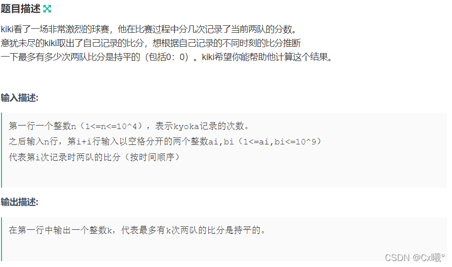
废话可跳过：一开始理解错题意了，：最多有k次比分持平，即每进行一局加一分都有两队比分持平的可能，如3:1->4:5，并不是一次！
思路 ：第一次记录时小的数+1 就是当时的最多平分次数，因为 0：0 也算是一次平分。
AC代码：
1 2 3 4 5 6 7 8 9 10 11 12 13 14 15 16 17 18 19 20 21 22 23 24 25 26 27 28 29 30 31 32 33 34 35 36 37 38 39 40 41 42 43 44 45 #include <iostream> #include <cstdio> #include <algorithm> #include <stack> #include <vector> #include <map> #include <queue> #include <cstring> #include <cmath> #include <set> #include <iterator> #include <numeric> using namespace std;typedef long long ll;#define ios ios::sync_with_stdio(false);cin.tie(0);cout.tie(0); #define INF 0x3f3f3f3f const int mod=1e9 +7 ;const int N=1e4 +4 ;int n;ll a[N],b[N]; int main () cin>>n; for (int i=1 ;i<=n;i++) { cin>>a[i]>>b[i]; } int A=0 ,B=0 ; int ans=1 ; for (int i=1 ;i<=n;i++) { A=max (a[i-1 ],b[i-1 ]); B=min (a[i],b[i]); if (B>=A) ans+=B-A+(a[i-1 ]!=b[i-1 ]); } cout<<ans<<'\n' ; return 0 ; }
J 跳一跳（同步更新）
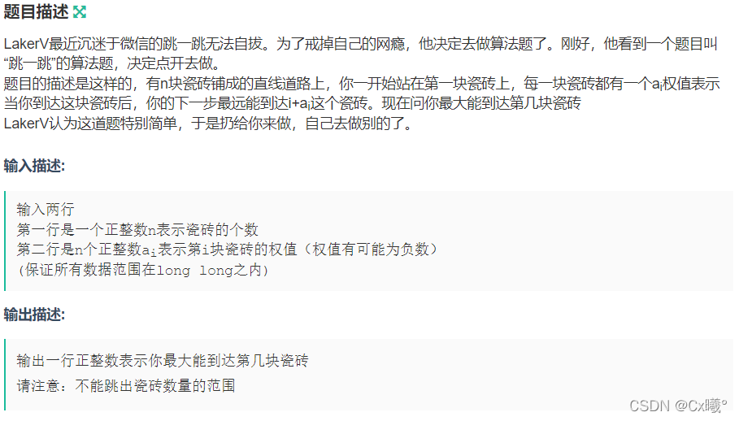
思路 ：每到达一块瓷砖更新当前可到达瓷砖的最大值。（注意数据范围！）
AC代码：
1 2 3 4 5 6 7 8 9 10 11 12 13 14 15 16 17 18 19 20 21 22 23 24 25 26 27 28 29 30 31 32 33 34 35 36 37 38 39 40 41 42 43 #include <iostream> #include <cstdio> #include <algorithm> #include <stack> #include <vector> #include <map> #include <queue> #include <cstring> #include <cmath> #include <set> #include <iterator> #include <numeric> using namespace std;typedef long long ll;#define ios ios::sync_with_stdio(false);cin.tie(0);cout.tie(0); #define INF 0x3f3f3f3f const int mod=1e9 +7 ;const int N=1e6 +5 ;ll n; ll a[N]; ll sum; int main () cin>>n; for (int i=1 ;i<=n;i++) cin>>a[i]; sum=1 ; for (int i=1 ;i<=min (n,sum);i++) { sum=max (sum,i+a[i]); if (sum>=n) break ; } sum=min (n,sum); cout<<sum<<'\n' ; return 0 ; }
ps：很神奇，感觉之前没见过这种写法，在更新时for循环的范围是一直在变的。
K Jay的小迷弟（审题，字符串模拟）
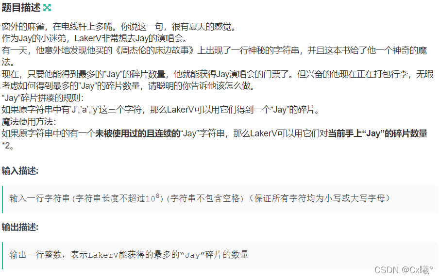
思路 ：如果是一个连续的 Jay 字符串，它既可以被用来使碎片数量2，也可以被用来使碎片数量+1。因此对于出现的连续的 Jay 字符串，我们单独用一个值来保存其出现次数，而对于字符 J,a,y 的个数，只要取三者的最小值即是未计算连续的 Jay 字符串时碎片的数量。如果此时碎片数量为 0 且连续的 Jay 字符串数量不为 0，则我们先用一个连续的 Jay 字符串给碎片数量+1，剩下的只要2 即可。
AC代码：
1 2 3 4 5 6 7 8 9 10 11 12 13 14 15 16 17 18 19 20 21 22 23 24 25 26 27 28 29 30 31 32 33 34 35 36 37 38 39 40 41 42 43 44 45 46 47 48 49 50 51 52 53 54 55 56 57 58 59 60 61 62 63 64 65 66 67 68 #include <iostream> #include <cstdio> #include <algorithm> #include <stack> #include <vector> #include <map> #include <queue> #include <cstring> #include <cmath> #include <set> #include <iterator> #include <numeric> using namespace std;typedef long long ll;#define ios ios::sync_with_stdio(false);cin.tie(0);cout.tie(0); #define INF 0x3f3f3f3f const int mod=1e9 +7 ;char s[100000004 ];ll cl,ca; ll a[4 ]; ll pmod (ll a,ll b) ll res=1 ; a%=mod; while (b) { if (b&1 ) res=res*a%mod; b>>=1 ; a=a*a%mod; } return res; } int main () scanf ("%s" ,s+1 ); ll n=strlen (s+1 ); for (int i=1 ;i<=n;i++) { if (i<=n-2 &&s[i]=='J' &&s[i+1 ]=='a' &&s[i+2 ]=='y' ) { cl++; i+=2 ; } else if (s[i]=='J' ) a[1 ]++; else if (s[i]=='a' ) a[2 ]++; else if (s[i]=='y' ) a[3 ]++; } ca=min (a[1 ],min (a[2 ],a[3 ])); if (ca==0 &&cl>0 ) { ca=1 ; cl--; } ca%=mod; ca=ca*pmod (2 ,cl)%mod; cout<<ca<<'\n' ; return 0 ; }
ps：这个题太怪了，用string做会TLE，必须用char数组做，用scanf，printf输入输出，，
L 翻转卡片（费马小定理，快速幂，DP）
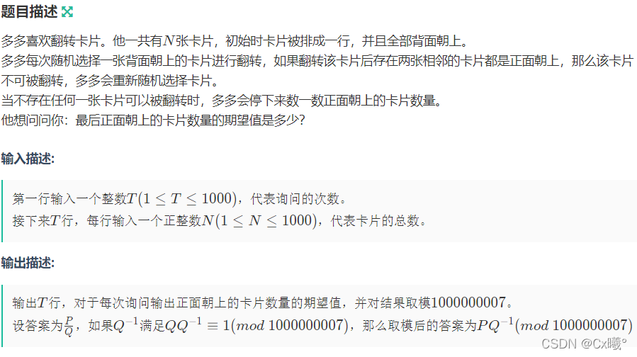
思路 ：分数取模需要提前了解费马小定理 + 快速幂
（没看懂QAQ，先把题解代码贴过来，后面会补我自己的代码，不会鸽的，，，）
AC代码：
1 2 3 4 5 6 7 8 9 10 11 12 13 14 15 16 17 18 19 20 21 22 23 24 25 26 27 28 29 30 31 32 33 34 35 36 37 38 39 40 41 42 43 44 45 46 47 48 49 50 51 52 53 54 55 56 57 58 59 60 #include <bits/stdc++.h> using namespace std;const int mod = (int ) 1e9 + 7 ;long long mypow (long long a, long long n) long long ans = 1 ; while (n) { if (n & 1 ) ans = ans * a % mod; a = a * a % mod; n >>= 1 ; } return ans; } long long dp[10000 ][2 ][5000 ];long long cnt[10000 ] = {0 , 1 , 2 };long long expect[10000 ];long long fact[10000 ];int main () fact[0 ] = fact[1 ] = 1 ; for (int i = 2 ; i <= 1000 ; ++i) { fact[i] = fact[i - 1 ] * i % mod; } dp[1 ][1 ][1 ] = 1 ; dp[2 ][1 ][1 ] = 1 ; dp[2 ][0 ][1 ] = 1 ; for (int i = 3 ; i <= 1000 ; ++i) { for (int j = 1 ; j <= (i + 1 ) / 2 ; ++j) { dp[i][0 ][j] += dp[i - 1 ][1 ][j]; dp[i][1 ][j] += dp[i - 1 ][0 ][j - 1 ]; dp[i][1 ][j] += dp[i - 2 ][0 ][j - 1 ]; dp[i][0 ][j] %= mod; dp[i][1 ][j] %= mod; cnt[i] += ((dp[i][0 ][j] + dp[i][1 ][j]) % mod * fact[j] % mod); cnt[i] %= mod; } } for (int i = 1 ; i <= 1000 ; ++i) { for (int j = 0 ; j <= (i + 1 ) / 2 ; ++j) { expect[i] += ((dp[i][0 ][j] + dp[i][1 ][j]) % mod * fact[j] % mod) * j % mod; expect[i] %= mod; } expect[i] = expect[i] * mypow (cnt[i], mod - 2 ) % mod; } int tt; cin >> tt; while (tt--) { int n; cin >> n; cout << expect[n] << '\n' ; } return 0 ; }
总结：这次比赛的补题整整写了一周才结束（还有一个题没搞清楚），其实有些题并不是做不出来，但是因为种种原因在比赛的时候AC不了，可能是我还需要多进行这种几个小时的练习来适应比赛的节奏什么的。以后比赛完补题应该尽快完成，思维题也需要多训练，这种题很有意思，可能看起来很繁琐的题有一个突破点就会变得很容易，例如小球滚动的那一题。望自己倍加努力，在自己热爱的事情上尽量做出成绩。
若有错误请指正
Orz
If you like this blog or find it useful for you, you are welcome to comment on it. You are also welcome to share this blog, so that more people can participate in it. If the images used in the blog infringe your copyright, please contact the author to delete them. Thank you !